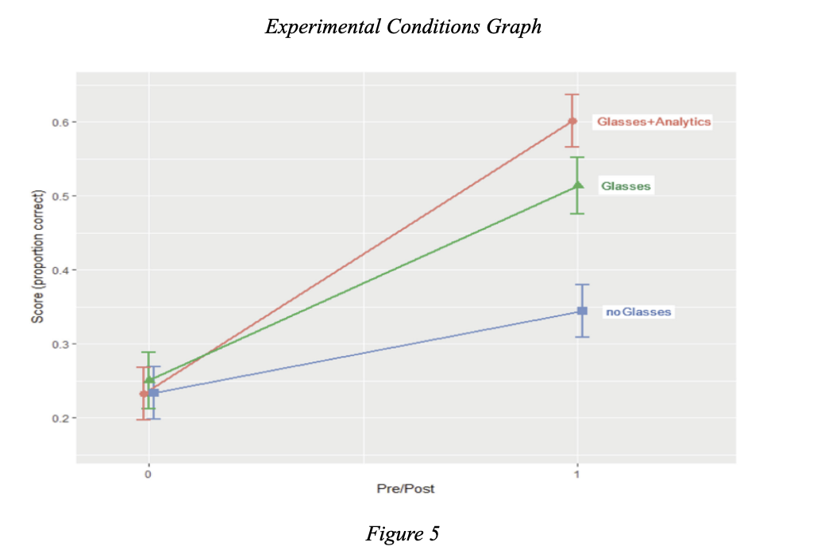

Another study extends this argument by noting that a range of AI-assisted systems including: adaptive testing, intelligent tutoring, and learning analytics, “use AI to adapt the learning experience to the individual needs of each student, with the goal of improving student learning outcomes” (Tiwari, 2023). Personalized AI instruction can give room for critical thinking and higher-order reasoning, allowing students to focus on evaluating the tasks at hand head on. Collectively, these studies suggest that structured and teacher-intervened AI applications enhance academic performance and can foster critical thinking by giving students immediate feedback and individualized challenges.

The graph in Figure 5 further illustrates how varying levels of AI-enhanced support can directly influence student learning outcomes. Across all three conditions, students began with nearly identical pre-test scores, yet their post-test performance diverged sharply based on the type of support provided. The no-glasses group showed only modest improvement, while students who used the glasses alone experienced substantially greater gains. Most notably, the glasses-plus-analytics condition produced the highest increase in correct responses, demonstrating the powerful effect of combining AI-driven insights with real-time instructional support. This visual evidence reinforces the central theme that when AI tools are paired with meaningful data and teacher awareness, students benefit from more precise feedback and more targeted learning interventions.
Despite promising results, scholars caution that the growing dependence of AI in education may also undermine the very skills education seeks to strengthen. Klimova and Pikhart paper from the journal of Frontiers in Psychology, warn that “students are exposed to digital environments that might lead to negative consequences for their overall well-being” (Klimova and Pikhart, 2025). They link heavy AI use to reduced face-to-face interaction, social isolation, and weakened emotional intelligence. These effects could also indirectly influence the reflective and interpersonal aspects of critical thinking as well. Moreover, many students and faculty “feel overwhelmed by the increasing reliance on AI tools, particularly when they lack sufficient training or technological literacy” (Klimova and Pikhart, 2025). This highlights the parallel between students feeling the need to use AI when challenged with difficult coursework, and those same students getting even more frustrated when their AI capital level isn't at a high enough level to utilize AI in a way that helps them either complete the task, or actually learn the concept they're presently being challenged with.
Hu, Pang, and Xing, researchers on the paper Evaluating the effects of Generative AI on student learning outcomes: Insights from a meta-analysis, provide an important viewpoint on the matter through their review of generative AI tools like ChatGPT in education. They conclude that these tools “improved cognitive, behavioral, and affective aspects of learning outcomes,” but also that the strongest effects appeared in smaller and less rigorous studies. They emphasize that generative AI “should be used with guidance and strategy to help improve student learning” (Hu, Pang, and Xing, 2025). Without structured oversight, AI can encourage surface-level answers instead of the deeper comprehension related to critical thought. Finally, inequities exist in access and readiness in relation to AI tools as well. As Drydakis observed, AI modules “often assume a foundational level of quantitative knowledge,” and students without that background “may struggle to keep pace” (Drydakis, 2025). This gap can expand these academic disparities and limit the potential of AI in the long run. To ensure that AI enhances rather than diminishes critical thinking, educators must intentionally design interventions that balance usage with human supervision and assistance, and provide equitable digital access.